Yelp is becoming a popular way to find great local businesses. From restaurant to medical service, people can easily obtain helpful information from Yelp reviews. Using Yelp can help people easily find the service that meet their expectation.
Have you ever gone to a restaurant based on its Yelp rating or after reading a rave review only to feel upset because the food quality did not meet your 5-star gourmet expectations. You may wonder whether some reviews are just advertisements. Is it possible that restaurants invite people to write fake reviews or create fake accounts themselves? Does those who wrote reviews have the the same taste as yours? We analyzed these questions and used the publicly available Yelp Academic Dataset to classify users based on their credibility.
Our dataset is from Yelp Dataset Challenge. The dataset contains 5 JavaScript Object Notation (JSON) files. We transformed JSON files to csv files so that we can apply Python Pandas to analyze the dataset.
Our initial vision was to use Yelp Dataset to build a recommender that would read a user's profile. Then some data science magic would happen, and the recommender would provide your ideal vacation plan. Sounds great right? All the travel agency's savings from firing their travel agents would undoubtedly be transferred to the consumer, so we’d also have unexpensive vacations too. For now, those shifty travel agents can keep their jobs; creating a recommendation system from text features in the Yelp dataset proved too difficult for several reasons.
Our next action plan was simple. Discover the Yelp Dataset, dig deep and find interesting connections. We realized that our data only allowed us to take two tracks: analyze business or analyze user. Hence, we dug deeper into both kinds of data and came up with number of question before we decided to evaluate user data in greater detail.
Q: How many categories does Yelp reviews have?
A: Not just restaurants! Yelp reviews include plenty of categories of business. There are 4318 unique categories in Yelp reviews. There are 22 main categories. Top 5 categories of bussiness are:
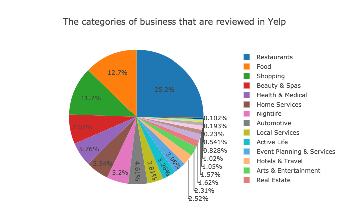Q: What is the rating distribution in the Yelp reviews?
A: Yelp users usually gave a high rating to local businesses. Among all the reviewed business in Yelp: 51.3% of businesses have at least a 4-star rating. The rating is high!
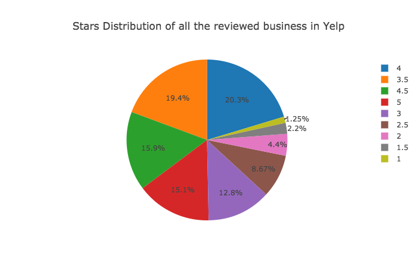Q: How many business are rated as 5-stars?
A: 12,964 business have a 5-star rating. The mean value of the star rating in the reviewed business are 3.69.
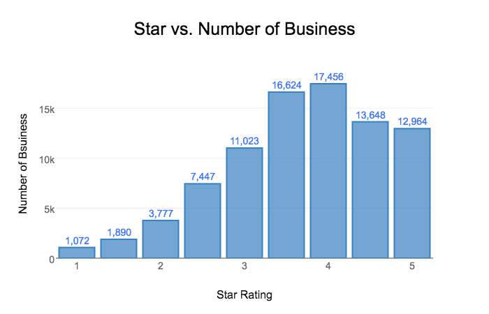Q: What is the star distribution for each main category?
A: The averge star rating is also high for each state. Rhineland-Palatinate, the GERMANY city, has the highest rating.
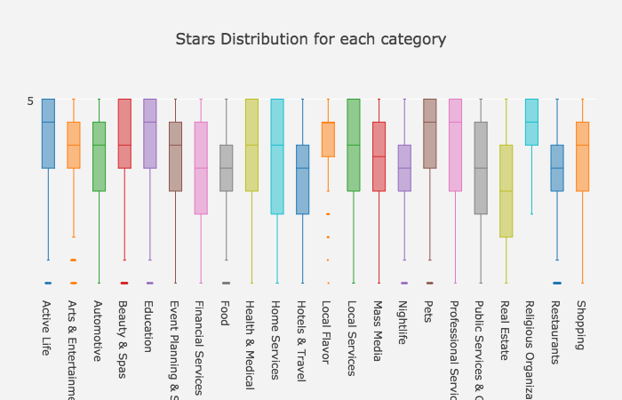Q: What is the average star rating for each state?
A: The averge star rating is also high for each state. Rhineland-Palatinate, the GERMANY city, has the highest rating.
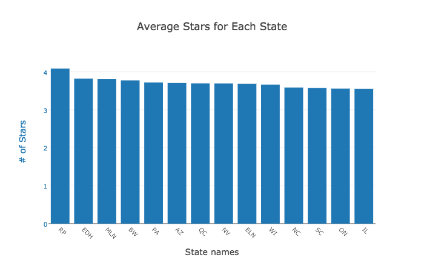While the data about businesses was good, it was constrained by the location. The Yelp dataset is composed using a few cities, some cities being outside USA. Hence making a general statement about any type of business would have been an exaggeration. On the other hand, user behavior is not affected too drastically by location, allowing us to make sweeping analyses. While analyzing business data we realized that the star ratings on Yelp are generally high. This made us question how credible are they? The histogram of average star ratings given out by users shows that users tend to rate on the extremes. The high bars on 1 and 5 stars, even after fitting the normal distribution, indicates this behavior.
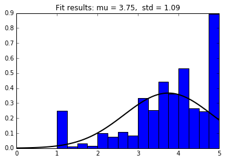Stars appear should be normally distributed. However, the outliers are at 1-star and 5-star.
This lead us to think about classifying Yelp users. Which user is most credible? Who gives the most relevant and genuine feedback on businesses? Who should we follow to get the best returns? To find that, we plotted the average star ratings of each user against multiple user attributes as seen in the graphs below.
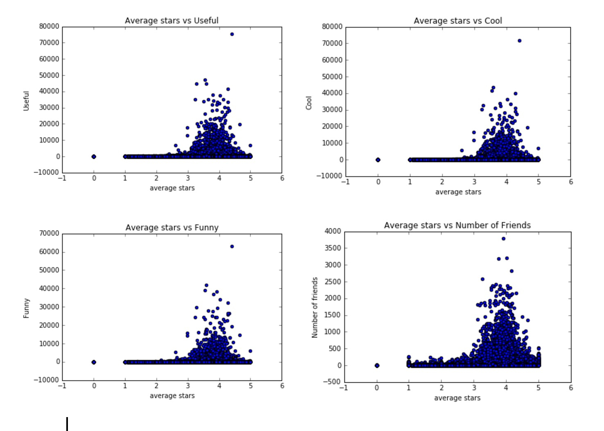The resulting graphs were very similar. Reliable users give out between 3 to 5 stars in general. This probably happened because the attributes usefulness, coolness and funniness are highly correlated as shown by the graphs below.
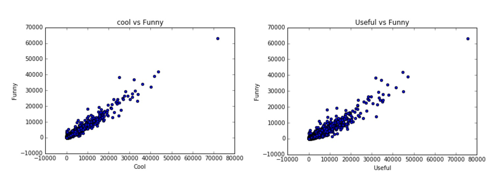This analysis lead us to conduct some feature engineering and create a classifier to find the best Yelp users.
Is it possible to classify users into elite and normal classes? We first tried a random forest classifier to see if learning over a small subset of features produced any promising results. The results are somewhat promising however we noticed something interesting. The ratio of elite users to normal users is about 35,000 to 460,000 users! The dataset is incredibly unbalanced, roughly a ratio of 1:20, meaning that only 5% of all users are labeled elite. This poses a major problem for any flavor of classifier. To illustrate the issue at hand, consider a degenerate classifier that guesses every user is a normal user. What an awful classifier! Unfortunately, applying this classifier will yield an accuracy of about 95%. Sampling techniques such as oversampling and undersampling can combat unbalanced data sets, however scikit's classifiers have a class weight parameter that computes the ratio of classes to one another and assigns a weight according to each classes frequency. Using the correct class weight, we expect that the acccuracy of the classifier will decrease because it will no longer overfit the data by stupidly guessing normal for all cases, thus making the classifier more generalizeable.
Now that we have a reasonably well-trained and accurate classifier we can look at the imporant features in our classification model and what their impact is on our analysis. Steve McQueen, a.k.a. the king of cool, would be pleased to find that the most important aspect of being an elite user member is that you are cool! Coming in at a whopping 23.2% being cool is the cat's pjyamas, the bee's knees, the... You get the idea. Being cool is fairly meaningful but that is not the only imporant feature users should have. Other featurs are less surprising: review count, number of fans. Surprisingly in this model, the number of fans, and friends did not rank in the top 5 as we believed they were.
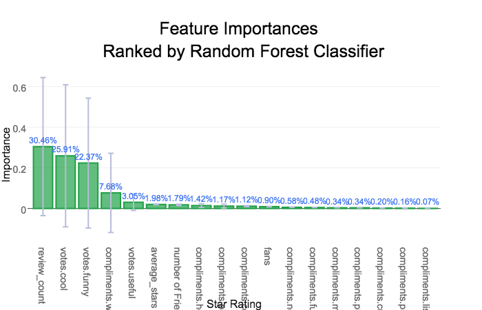The extra trees classifier gave different importances for each feature, but the accuracy for this model is comparable to the random forest classifier. The feature importances of this model were more consistent with the way elite users are elected according to yelp so it was chosen as the preferred model. The most important features, the number of fans, the review count, and the reviews considered useful, matches our intuition about what makes a user elite or popular. Those that publish many useful reviews are likely to have many fans or followers that respect the users opinion giving them credibilty.
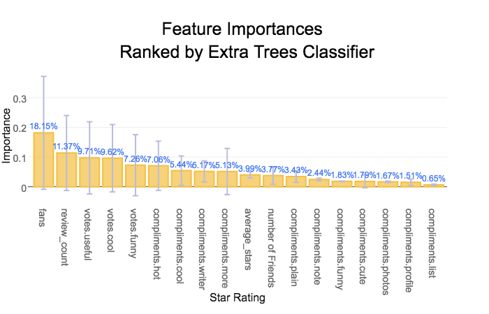To illustrate the issue at hand, consider a degenerate classifier that guesses every user is a normal user. What an awful classifier! Unfortunately, applying this classifier will yield an accuracy of about 95%. Sampling techniques such as oversampling and undersampling can combat unbalanced data sets, however scikit's classifiers have a class weight parameter that computes the ratio of classes to one another and assigns a weight according to each classes frequency. Using the correct class weight, we expect that the accuracy of the classifier will decrease because it will no longer overfit the data by stupidly guessing normal for all cases, thus making the classifier more generalizable.
The feature importances vary somewhat as shown in the bar chart however the fans feature clearly dominates many of the trees in the ensemble.Red dots = top twenty elite users.
To check the validity of our classifier, we generated a social network graph of the top elite user that our classfier found. In the above graph, the red dots are the top twenty people that have the highest elite scores. The graph clearly shows how these elite users are at cardinal nodes that connect large groups of people. These elite users also had some of the highest Closeness Centrality value in the graph.
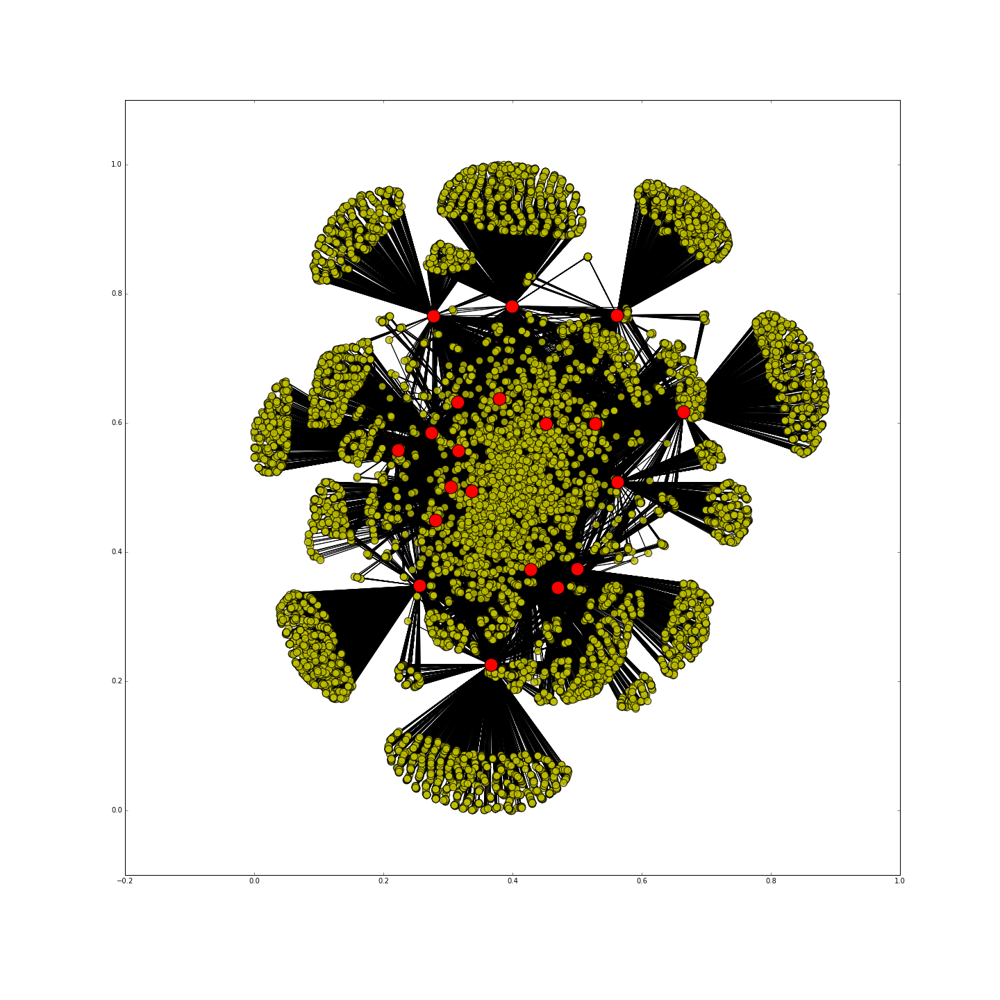Using the feature importances from the classifier we decided to delve deeper into creating a score for the reliability or credibility of the user. The score is calculated by vectorizing the classifier weights, and the numeric features for each user, and computing the inner product. This produces a linear metric based on the values of the important features and each user that we will investigate further.
Using basic statistics we can see that there are several outliers in the elite data set that are skewing the mean to the right towards the outliers. The 75% quartile is greater than the mean which is indicative of outliers distorting the mean as a measure of centrality. Rather than throwing out the outlier from the dataset, they were truncated to three times the standard deviation.
To measure how far away a user is from being elite, we first need to determine the score cuttoff for elitism. We could take the absolute minimum, median, mean, or a more advanced measure to determine the liklihood that a user is eilte or near the threshold. One idea is to try and fit a distribution to the scores of elite users and see if they also follow a normal distribution. This would allow for a probability of being elite to be calculated for all users not just the elite ones!
Again the way the scores are distributed among the elite users is frustrating! It looks almost like a normal or a skew normal distribution but a number of outliers are causing the distribution.
Since we are assuming normality for our custom scoring system, it would be helpful if our score was on a 0 to 1 scale. The two standard procedures for doing so are standardization and normalization, however standardization was favored to avoid negative score values. The outliers and users more than one standard deviation from the mean still greatly affect the distribution of the score.
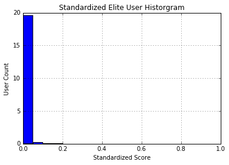Taking the log of the score smoothed out the dramatic fluctuation in scores as many of the more popular users experience exponential growth in their scores of elitism. Solely among the elite users we see that their scores are normally distributed about the mean score of 4.1. For normal users we see that a power law distribution emerges, which matches our intuition about the number of elite users relative to the overall user base.
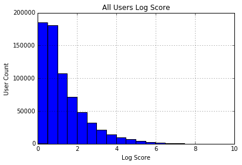 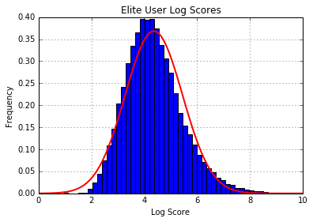The log score is then standardized and fit to a normal distribution. Now that we have a normal distribution that gives the probability that a user is an elite user. This measure of elitism can also be used as a credibility or reliability score as elite users in addition to being superstars are the only verified users included in the data set; they have to be nominated and re-nominated every year.
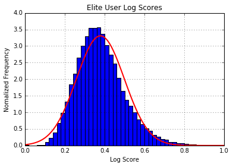Other than the star rating of a restaurant, we want to know whether the rating is up-to-date. We use a pseudo-time-series data to help investigate the trendiness of a restaurant. The time data is measured in days passed since a very early date (01-01-2000) and the independent variable is the stars. After performing a linear regression on the data, the slope of the regression will be a measure of the restaurant’s trendiness, with unit Δstar/day. With this information users can find out whether a restaurant has been improving, stagnant, or getting worse, and can make better decisions. However, the data is not intuitive to display. To help with the comparison, we can use a probability density function.
Using a probability density function can help users find out where a score stands comparing to the population. If a trending score is 0.02, it might not look impressive. However, a user can see that it is ranked higher than 99% of the businesses. Indeed, this is equal to nearly a 1 star improvement to a business rating every 3 months. Below is the distribution of a business' trendiness. Using the same method, the average star and average custom score also has been calculated to show their standings in the population.
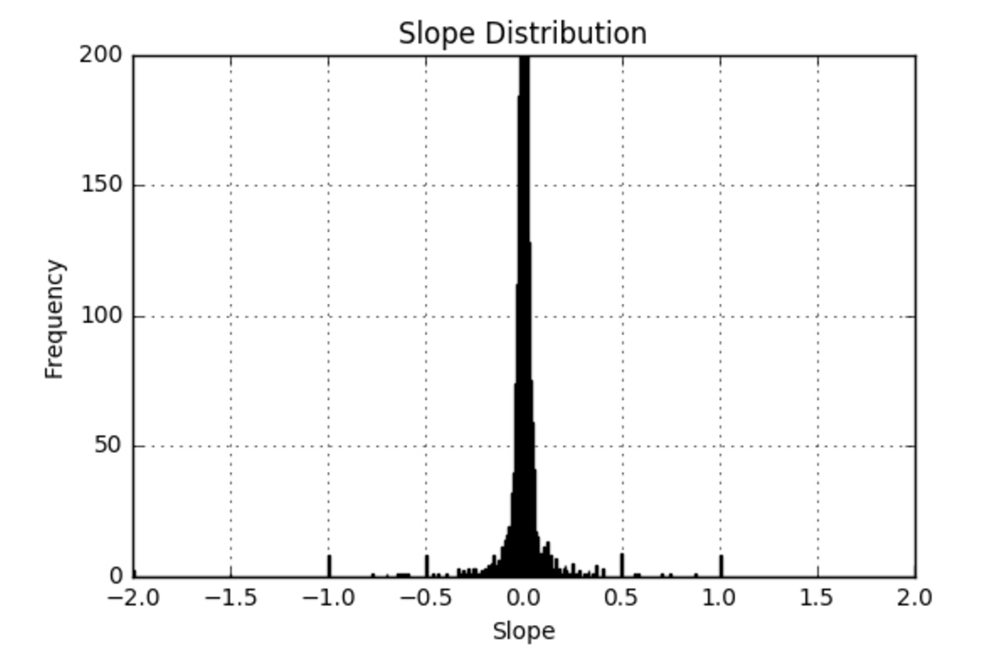A big criticism of Yelp is that the rating of a business is solely determined by users, many of whom too inexperienced to accurately judge the quality of said business. Pro or elite membership on Yelp is usually awarded based on the quantity and quality of the reviews given by the user. The important question becomes whether elite Yelp members judge restaurant better than non-pro members. To do that we calculate the score discrepancies between users (pro and non-pro) and the average rating of a restaurant.
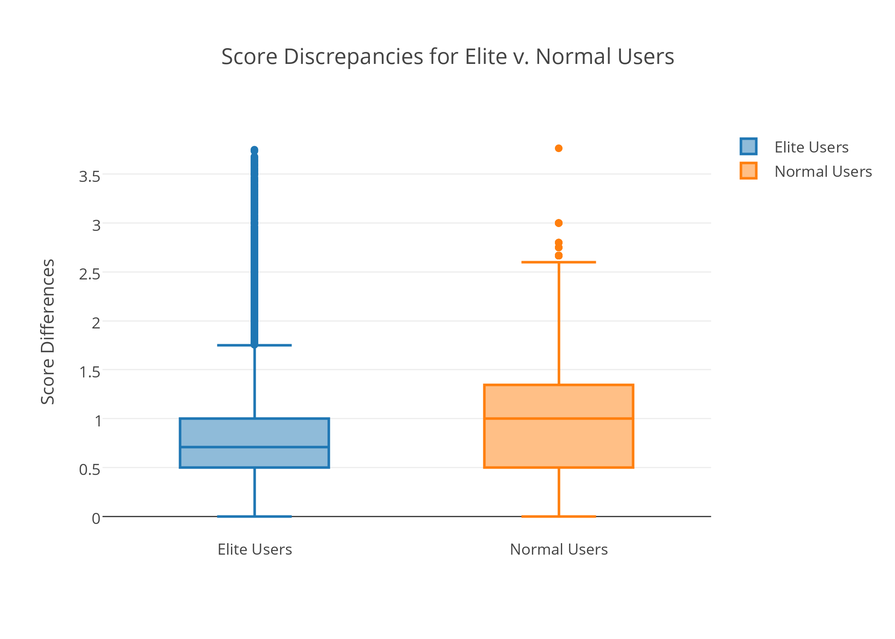Knowing that elite users can score a restaurant closer to its true average, we can use this to our advantage and generate a weighted score with emphasis on user eliteness. Doing so will allow us to generate scores that is more reliable. Instead of relying solely on the Yelp rating, we can combine the new score with the trendiness to give a better representation of ratings.
To illustrate the effectiveness of the application, we built a search application which retrieves a list of restaurants along with the information above to help users make better decisions. The back-end of the application is based on Apache Solr. The start page of the application is below:
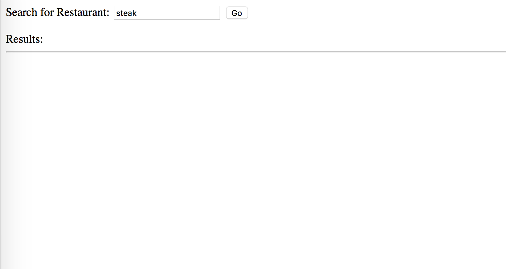After clicking "Go", it retrieves a list of restaurants as below:
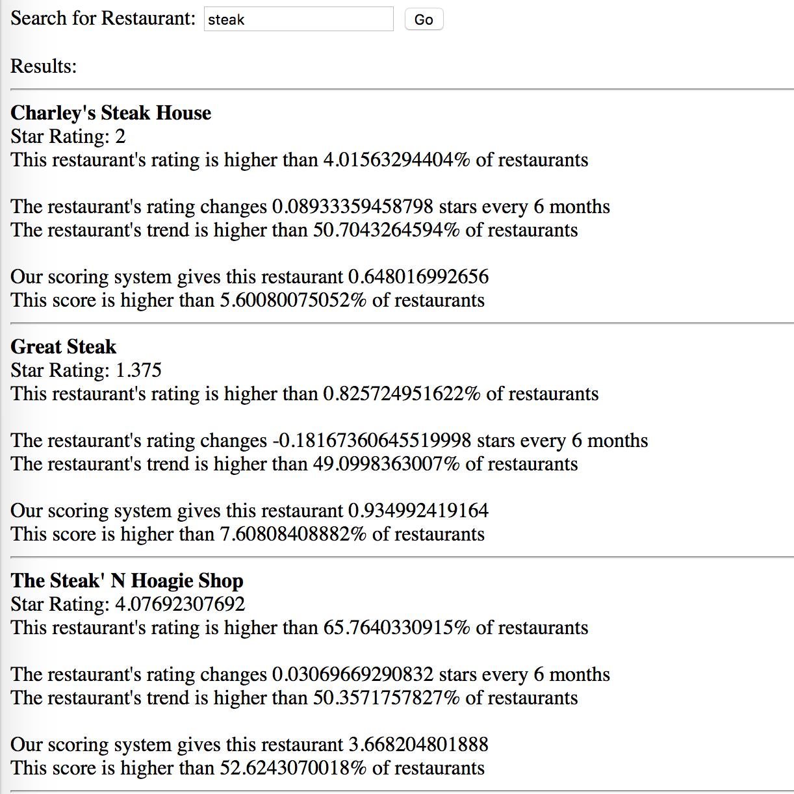This is another example of retrieved restaurants:
As we can see above, Pho Nhu Y has a relatively low score (among bottom 10%), but because many elite users rated this restaurants highly, our system gives it a score of 4.4, among the top 30%